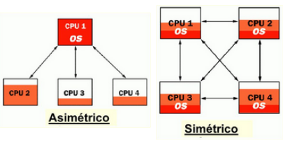

Sistemas operativos#
Sin su software, la computadora es básicamente un montón de metal inútil.
El Sistema Operativo es el software principal o conjunto de programas de un sistema informático que gestiona los recursos de hardware y provee servicios a los programas de aplicación de software.
Uno de los propósitos del sistema operativo que gestiona el núcleo intermediario consiste en gestionar los recursos de localización y protección de acceso del hardware, hecho que alivia a los programadores de aplicaciones de tener que tratar con estos detalles.
Funciones del sistema operativo#
1. Gestión de procesos#
La creación y eliminación de procesos tanto del usuario como del Sistema Operativo. La planificación de los procesos. La provisión de mecanismos para sincronización, comunicación y manejo de bloqueos mutuos.
2. Gestión de la memoria principal#
Esta memoria consiste en un almacén de datos que es compartido por la CPU y las aplicaciones.
3. Gestión de memoria#
La gestión de memoria o administración de memoria es el acto de gestionar la memoria de un dispositivo informático. El proceso de asignación de memoria a los programas que la solicitan. La gestión de la memoria principal de una computadora es una tarea de suma importancia para el funcionamiento de la misma
4. Gestión del sistema de archivos#
Los archivos son formatos creados por el usuario en el ordenador, los cuales se convierten en tablas que se deben registrar en el sistema si se quieren conservar y volver a usar en un futuro.
5. Gestión arranque#
Un gestor de arranque es un programa que permite elegir el siguiente código a ejecutar en el proceso de arranque, tradicionalmente a través de un menú. Habitualmente el gestor de arranque forma parte del cargador de arranque como por ejemplo en GRUB, GRUB 2, LILO o SYSLINUX
6. Gestión del sistema de entrada y salida#
Se encarga de gestionar los puertos de entrada y salida del ordenador. Estos puertos son todos los periféricos que se pueden conectar a la torre del ordenador, como pueden ser el monitor, el ratón, la impresora, los auriculares, un pen-drive…
7. Administración de usuarios#
El sistema operativo también se encarga de la gestión de los perfiles que se hayan creado y almacenado en el ordenador, pudiendo ser esta administración tipo monousuario o multiusuario.
No se debe entender con monousuario como que el sistema operativo solo permite que sólo se cree un usuario para utilizar el ordenador. Monousuario implica que sólo las ejecuciones de ese usuario estarán activas y solo las de él. En cambio, multiusuario significa que permite que las tareas de más de un usuario estén activas al mismo tiempo.
Clasificación de Sistemas Operativos#
Los sistemas operativos se pueden clasificar de acuerdo a diferentes criterios
Por el número de usuarios
Monousuarios
Multiusuarios
Por el número de tareas
Monotarea
Multitarea
Por el número de procesadores
Monoprocesador
Multiprocesador
Simétrico
Asimétrico
Los sistemas operativos monousuario o monopuesto son aquellos que únicamente soportan un usuario a la vez, los sistemas operativos multiusuario o multipuesto son capaces de dar servicio a más de un usuario a la vez.
Los sistemas monotarea son aquellos que solo permiten una tarea a la vez por usuario.
Los sistemas monoproceso son los que únicamente permiten realizar un proceso a la vez. Sin embargo, permiten simular la multitarea haciendo que el sistema realice una tarea rotatoria con intercambio muy rápido. Son los sistemas operativos multiproceso los que permiten realizar varios procesos simultáneamente, pueden ser simétricos, que son los que distribuyen la carga de procesamiento por igual entre todos los procesadores existentes no como los asimétricos
